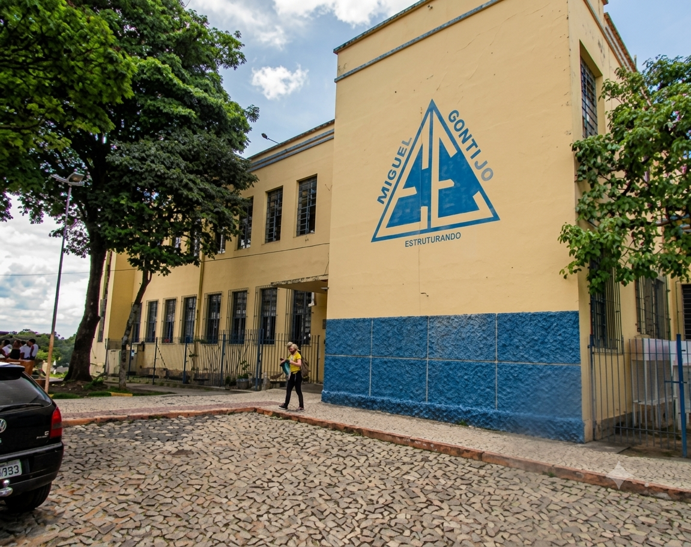

Há 77 anos a Escola Estadual Miguel Gontijo contribui para o desenvolvimento de Bom Despacho, nossa escola é uma referência na formação de cidadãos e profissionais comprometidos com o futuro.
Mais do que um espaço de aprendizagem, a escola é um ambiente de transformação social, fortalecimento de vínculos com a comunidade e preparação dos jovens para os desafios da vida, do trabalho e da cidadania.
Atualmente, a escola atende estudantes do 6º ano do Ensino Fundamental ao 3º ano do Ensino Médio, oferecendo uma educação pública de qualidade, pautada no acolhimento, na inclusão e no desenvolvimento integral dos alunos.
No Ensino Médio em Tempo Integral, nssos estudantes têm a oportunidade de aliar a formação acadêmica à qualificação profissional por meio dos cursos técnicos em Administração, Informática e Desenvolvimento de Sistemas.